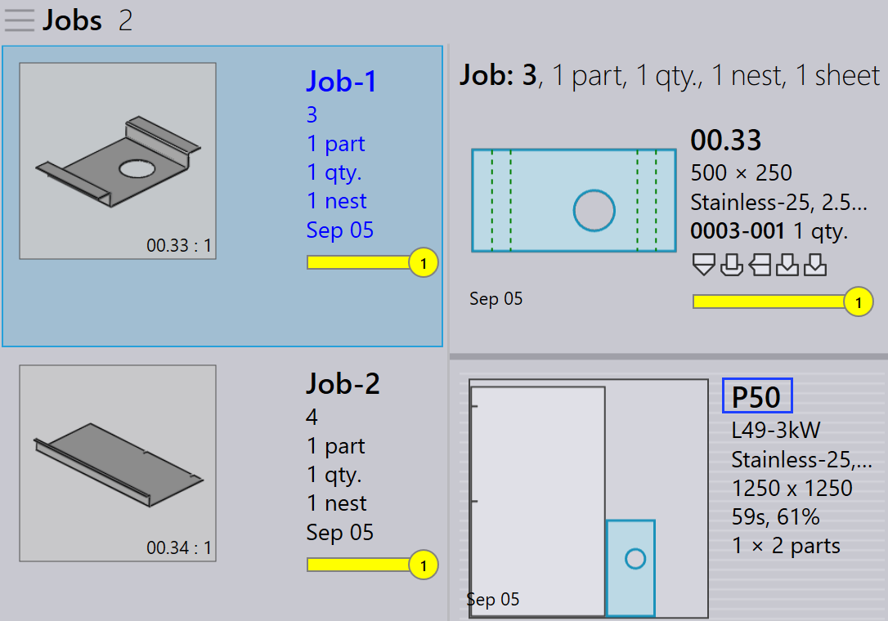
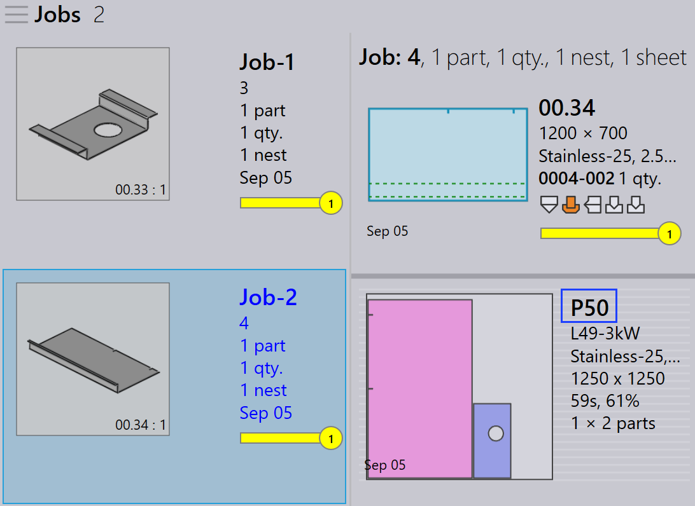
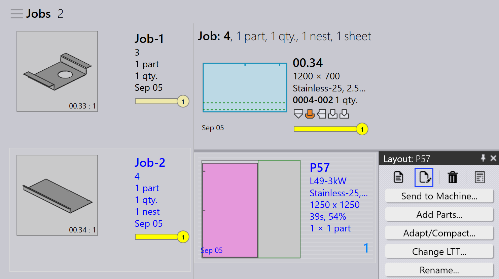
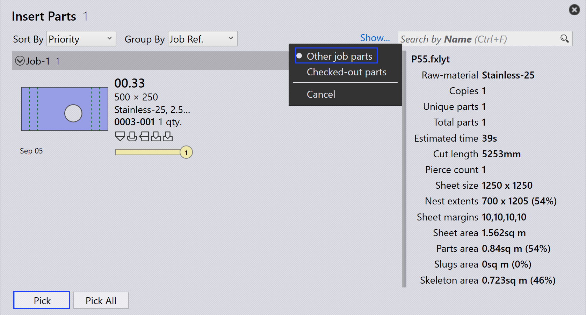

Reempaquetado
JFY Plus no dispone de un módulo de reempaquetado independiente. En su lugar, el reempaquetado se gestiona mediante opciones a nivel de tarea que ofrecen flexibilidad en la forma de combinar las piezas.
Hay tres formas de realizar el reempaquetado.
-
Reempaquetado con Mix parts from multiple Jobs.
-
Reempaquetado manual con el asistente interactivo Add Parts.
-
Reempaquetado manual con JFY Core.
Reempaquetado con mix parts from multiple Jobs
-
Para habilitar esta opción, vaya a factory → settings → Job → Nest settings → Mix parts from multiple Jobs.

-
Cuando está habilitada, esta opción permite agrupar piezas de diferentes tareas durante el nesting automático o interactivo, lo que da como resultado un empaquetado o nesting combinado.
-
Por ejemplo:
-
Job-1 tiene 1 pieza, Job-2 tiene 1 pieza.
-
Con Mix parts from multiple Jobs habilitado, JFY Plus puede reempaquetar estas 2 piezas en un único nesting optimizado.
-
 
-
Sin esta opción, las piezas de cada tarea permanecen separadas durante el nesting/empaquetado con nombres de diseño diferentes.
-
El reempaquetado también se puede realizar manualmente sin habilitar esta opción.
Reempaquetado manual con el asistente interactivo para añadir piezas
-
Desde la vista de diseño, seleccione las piezas que desea reempaquetar.
-
Haga clic con el botón derecho en la pieza y elija Add Parts… en el panel de diseño.

-
Siga las indicaciones del asistente para completar el proceso de reempaquetado.
-
Elija Show other job parts y añádalas a la tarea actual.

-
Revise los cambios y confirme el reempaquetado.

Para obtener más detalles, consulte Añadir piezas.
Reempaquetado manual con JFY Core
-
Abra JFY Core haciendo clic en
 .
.

-
En la interfaz de JFY Core, haga clic en Add.

-
Aparece una nueva ventana en la que puede seleccionar las piezas que desea reempaquetar. Haga clic en Show… y, a continuación, seleccione Other job parts. Tras realizar su selección, haga clic en Pick.

-
Aparece una nueva ventana en la que puede definir dónde debe reempaquetarse la pieza.
-
Haga clic en Save changes to JFY Plus y el diseño reempaquetado estará disponible en JFY Plus.